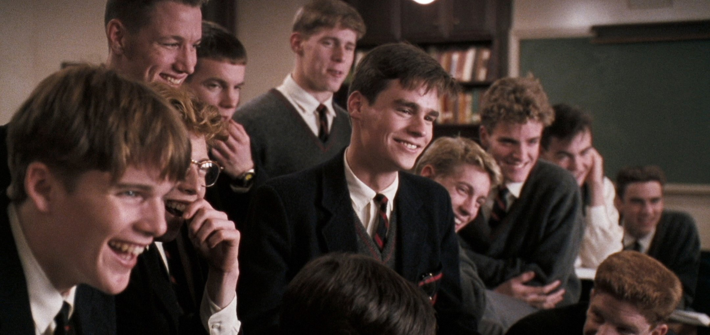

Why So Many Films Now End in a Shrug
A look at ambiguity, uncertainty, and the changing language of modern cinema.
Politics · Society · Culture · Literature · Film
Thoughtful analysis, honest criticism, and writing that trusts its reader.
Thoughtful reviews and essays exploring cinema, storytelling, filmmaking, and the cultural conversations behind the screen.
A look at ambiguity, uncertainty, and the changing language of modern cinema.
What happens when studios move away from smaller stories and risk-taking filmmakers.
How returning to a film can reveal meanings we missed the first time.

Film CriticismWhy films built around groups can sometimes tell richer stories than individual heroes. A deeper look at the dynamics of the dead poets society.
Exploring filmmakers who trust audiences with moments of quiet reflection.
Why capturing the spirit of a story matters more than copying every detail.